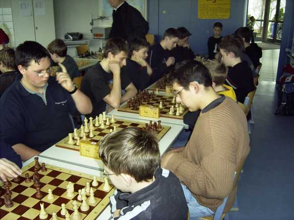
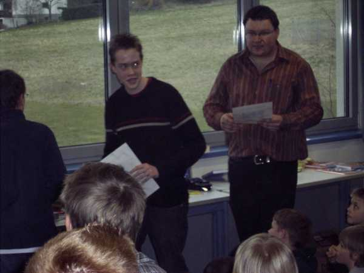

77 schachbegeisterte Kinder und Jugendliche trafen sich in Geisingen.

Jochen bei der Arbeit

Jochens erster Sieg gegen seinen "Angstgegner" Gregor bahnt sich an

Daniel etwas zu schnell...

Lukas etwas vorsichtiger.

Jochen freut sich über Platz 2 in der U14

Unser "Gast" Tobias Oelschlegel wurde 4. in der U16